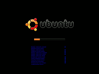
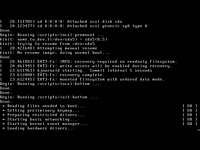

Wiki
Mitmachen
- Wikiartikel anlegen
- Howto anlegen
- Wiki-Referenz
- Wiki-Syntax
- Baustellen
- Artikelideen
- Ungetestete Artikel
- Ausbaufähige Artikel
- Fehlerhafte Artikel
- Rund ums Wiki
Konfiguration
- Backlinks anzeigen
- Exportieren
Bootsplash
Archivierte Anleitung
Dieser Artikel wurde archiviert, da er - oder Teile daraus - nur noch unter einer älteren Ubuntu-Version nutzbar ist. Diese Anleitung wird vom Wiki-Team weder auf Richtigkeit überprüft noch anderweitig gepflegt. Zusätzlich wurde der Artikel für weitere Änderungen gesperrt.
Achtung!
Ubuntu ab 9.10 verwendet GRUB 2, der anders konfiguriert wird. Ubuntu ab 10.04 benutzt zudem Plymouth für die Darstellung des Bootsplash. Daher funktionieren die im Artikel genannten Veränderungsmöglichkeiten nicht mehr. Eine Anleitung, wie bei Plymouth der Bootsplash geändert werden kann, findet sich im Artikel Plymouth.
Zum Verständnis dieses Artikels sind folgende Seiten hilfreich:
Der Bootsplash oder Bootscreen ist die grafische Anzeige während des Ladens des Betriebssystems. Ubuntu benutzt für diese Anzeige das Programm USplash. Dabei benutzt es den Framebuffer der Grafikkarte, um die Grafik ohne einen XServer darstellen zu können.
Eine Verwechslungsgefahr besteht mit den grafischen Gestaltungsmöglichkeiten des Bootloaders GRUB bzw. GRUB_2. Allerdings ist das Auswahlmenü des Bootloaders unter Ubuntu normalerweise deaktiviert.
Installation¶
Bei der Installation von Ubuntu wird je nach Ubuntu-Variante automatisch ein anderes Design für USplash installiert. Je nach Variante erscheint also während des Bootvorganges ein großes "Ubuntu", "Kubuntu", "Xubuntu" usw. auf dem Bildschirm.
Die jeweiligen Designs für USplash sind in den Paketen
usplash-theme-ubuntu
kubuntu-artwork-usplash
xubuntu-artwork-usplash
edubuntu-artwork-usplash
usplash-theme-ubuntustudio (universe, [2])
ichthux-artwork-usplash (universe, [2])
debian-edu-artwork-usplash (universe, [2])
gobuntu-artwork-usplash (universe, [2])
enthalten. Eine vollständige Liste lässt sich über die Paketverwaltung [1] mit dem Stichwort "usplash" finden.
Auflösung bestimmen¶
Die Auflösung des Bootsplash kann über die Datei /etc/usplash.conf bestimmt werden. Ist die Auflösung falsch eingetragen, kommt es z.B. zu einer verzerrten Darstellung des Bootsplashes. Die zu nutzende Auflösung kann man direkt eintragen [4], beispielsweise:
# Usplash configuration file xres=1280 yres=1024
Nicht vergessen: die Auflösung an den eigenen Bildschirm anpassen! Allerdings wird dadurch nicht die Auflösung der Textkonsole beeinflusst. Weitere Informationen hierzu findet man unter dem Stichwort "Booten" im Wiki.
Nach dieser Änderung gibt man
sudo update-usplash-theme
im Terminal ein, um sich die installierten Designs anzeigen zu lassen. Mit
sudo update-usplash-theme usplash-theme-ubuntu
wird beispielsweise das Standarddesign von Ubuntu ausgewählt. Um das Ergebnis zu betrachten, muss man den Computer neustarten.
Design auswählen¶
Bei der Installation von Metapaketen wie "kubuntu-desktop" wird auch automatisch ein passendes Design für den Bootvorgang installiert. Das heißt, obwohl man ursprünglich z.B. Ubuntu installiert hat, sieht man nun ein großes "Kubuntu" auf dem Bildschirm, während der Rechner startet.
Möchte man den Ubuntu-Startbildschirm wiederherstellen, so kann man das entsprechende Design einfach deinstallieren, also z.B. das Paket
kubuntu-artwork-usplash
Möchte man Metapakete wie kubuntu-desktop weiterhin installiert haben, so kann man den Boot-Bildschirm auch mit den Befehlen:
sudo update-alternatives --config usplash-artwork.so sudo dpkg-reconfigure linux-image-$(uname -r)
selbst festlegen. Nach Eingabe des ersten Befehls kann man das gewünschte Design auswählen. Der zweite Befehl aktiviert nun das gewählte Design für den Bootprozess. 
Meldungen anzeigen¶
Der Bootvorgang unter Ubuntu läuft üblicherweise ohne Meldungen daruber ab, was der Computer gerade macht. Aus anderen Linux-Distributionen kennt man jedoch Statusmeldungen, dass dieser und jener Prozess gerade erfolgreich gestartet wurde. Dies kann man auch mit Ubuntu realisieren. Dazu muss man in der Datei /boot/grub/menu.lst die Optionen quiet in der Zeile "# defoptions=" entfernen [4]. Am Ende sollte dieser Abschnitt so
## additional options to use with the default boot option, but not with the ## alternatives ## e.g. defoptions=vga=791 resume=/dev/hda5 # defoptions=splash
aussehen. Nutzt man andere Bootoptionen, so können diese hier natürlich weiter stehen. Anschließend muss man den Grub noch mit
sudo update-grub
aktualisieren. Danach wird bei jedem Start eines Dienstes während des Bootvorganges ein [OK] ausgegeben. Mehr zu den Funktionen findet man im Artikel menu.lst.

USplash deaktivieren¶
In gewissen Situationen kann es praktisch sein, auf einen grafischen Bootsplash zu verzichten. So kann man z.B. Problemen auf die Schliche kommen, die während des Bootvorganges zu Fehlern führen. Manche Kombinationen von Grafikkarten und Treiber vertragen sich auch nicht gut mit dem sog. Framebuffer. Es kommt vor, dass die Grafikkarte den Framebuffer nicht mehr ansprechen kann, wenn ein 3D-Treiber die Grafikkarte benutzt. Hier hilft es den Bootsplash - und somit auch den Framebuffer - ganz abzuschalten.
Temporär¶
Während des Bootvorganges kann man über die Tastenkombination Strg + Alt + F1 in die erste virtuelle Konsole wechseln. Hier werden die Ausgaben des Bootprozesses angezeigt. Der Rechner bootet hierbei ganz normal weiter, am Ende landet man also im Display-Manager, wo man sich als Benutzer am System anmelden kann.
Permanent¶
Um den Bootsplash permanent zu deaktivieren, muss wieder die Datei /boot/grub/menu.lst angepasst werden und die Option splash in der Zeile "# defoptions=" in ein nosplash abgeändert werden [4].
## additional options to use with the default boot option, but not with the ## alternatives ## e.g. defoptions=vga=791 resume=/dev/hda5 # defoptions=quiet nosplash
Anschließend muss Grub wieder mit
sudo update-grub
aktualisiert werden.
Probleme und Lösungen¶
Bootsplash wird unvollständig angezeigt¶
Wurde die Festplatte ausgetauscht oder geklont bzw. die Swap-Partition [6] neu eingerichtet/formatiert, ändert sich die UUID für die Swap-Partition. Während des Bootvorgangs wird überprüft, ob ein "Suspend-To-Disk"-Image vorliegt. Dieses liegt normalerweise in der Swap-Partition. Erkennt aber nun das Skript /usr/share/initramfs-tools/scripts/local-premount/resume die Partition aufgrund einer neuen UUID nicht, wird der Bootsplash abgebrochen und der Bootvorgang im Textmodus fortgesetzt. Mit dem Befehl
swapon -s
kann angezeigt werden, welche Partition als Swap verwendet wird. Mit dem Befehl
ls -al /dev/disk/by-uuid/
kann die UUID ermittelt werden. Diese wird dann mit einem Editor [4] und Root-Rechten [5] in der Datei /etc/initramfs-tools/conf.d/resume eingetragen bzw. korrigiert. Anschließend muss man nur noch das Initramfs-Image aktualisieren:
sudo update-initramfs -u
Nun sollte der Bootsplash wieder komplett durchlaufen.
Timeout verhindern¶
Es kann vorkommen, dass der Bootsplash nicht über den ganzen Bootprozess hinweg angezeigt wird. Dies ist beabsichtigt, um z.B. bei einer Festplattenüberprüfung eine optisch sichtbare Rückmeldung zu bekommen. Sollte ein Prozess jedoch länger als geplant zum Starten brauchen, so wird der Bootsplash eventuell ohne Grund unterbrochen.
ReiserFS¶
Dies ist z.B. bei großen Festplatten der Fall, die mit dem Dateisystem ReiserFS formatiert sind. Das Einbinden einer mit ReiserFS formatierten Partition dauert einfach etwas länger. Dazu kommt, dass dieser Prozess umso länger dauert, je größer die Partition ist.
In solch einem Fall kann man den Timeout, also die Zeit, wie lange der Prozess dauern darf, verlängern. Im Fall von ReiserFS kann man dies in der Datei /etc/init.d/checkfs.sh machen [4]. Durch das Hinzufügen der Zeile usplash_write "TIMEOUT <Sekunden> wird der Timeout des Usplash von Hand gesetzt. Also beispielsweise
...
do_start () {
usplash_write "TIMEOUT 60"
# See if we're on AC Power
# If not, we're not gonna run our check
...Von da an sollte der Bootsplash nicht mehr beim Booten verschwinden. Andere Dienste lassen sich sicherlich ähnlich einstellen.
"waiting for resume device"¶
Diese Meldung bedeutet, dass das System versucht, das für den Ruhezustand (Suspend-to-Disk) nötige Auslagerungsgerät oder -datei (Swap) zu erkennen. Wenn hier der Bootsplash verschwindet, kann man den Timeout durch folgende Änderungen in der Datei /usr/share/initramfs-tools/scripts/local-premount/resume erhöhen:
...
# timeout ändern:
if [ -x /sbin/usplash_write ]; then
/sbin/usplash_write "TIMEOUT $(( ${slumber} + 2 ))" || true
fi
slumber=$(( ${slumber} * 10 ))
while [ ! -e "${resume}" ] || ! /lib/udev/vol_id "${resume}" >/dev/null 2>&1; do
/bin/sleep 0.1
slumber=$(( ${slumber} - 1 ))
[ ${slumber} -gt 0 ] || break
done
# neu hinzufügen:
if [ -x /sbin/usplash_write ]; then
/sbin/usplash_write "TIMEOUT 15" || true
fi
...Die expliziten Änderungen sind das $(( ${slumber} + 2 )) in der oberen if-Sektion und die ganz neu hinzuzufügende untere if-Sektion.
Nach einem abschließenden
sudo update-initramfs -u
sollte der Bootsplash bei der Resume-Device-Erkennung erhalten bleiben.
Diese Revision wurde am 19. März 2015 16:29 von aasche erstellt.
- Erstellt mit Inyoka
-
 2004 – 2017 ubuntuusers.de • Einige Rechte vorbehalten
2004 – 2017 ubuntuusers.de • Einige Rechte vorbehalten
Lizenz • Kontakt • Datenschutz • Impressum • Serverstatus -
Serverhousing gespendet von